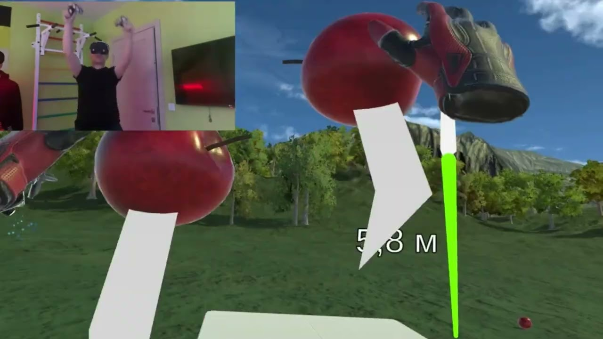
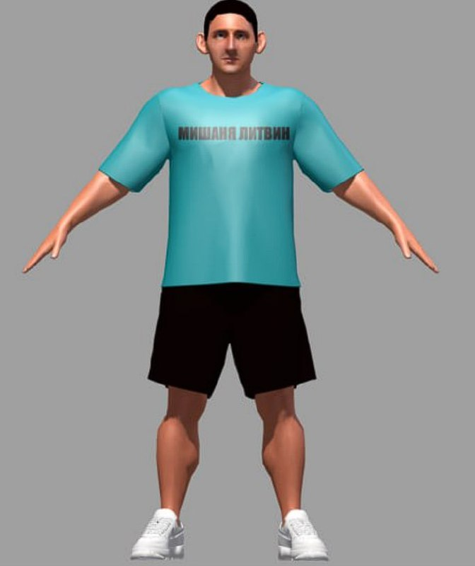

РаботыWork
ПроектыProjects
У каждого проекта есть страница с разбором: что за задача, что делал именно я и как это устроено внутри. Код открыт, ссылки на репозитории — там же. Every project has its own page: what the problem was, what I personally did, and how it works inside. The code is public and linked from each page.



ЕщёAlso
- Cookie Carnage Топ-даун шутер про уничтожение антропоморфных печенек. Сделан командой за 24 часа на джеме GP Profit Jam. A top-down shooter about destroying anthropomorphic cookies. Built by a team in 24 hours at the GP Profit Jam. itch.io
- Monopoly Defense Учебный проект на Unreal Engine 5. Собран билд под Windows. A university project in Unreal Engine 5, packaged for Windows. —
- Агентство неудачниковLosers' Agency Настольная игра: придумана, собрана и оттестирована. Показана на ITMO GameDevDay. A board game, designed and playtested. Showcased at ITMO GameDevDay. Telegram
ПутьTrack record
ОпытExperience
- Вёл команду из четырёх человек на Figure Spider: задал архитектуру, распределил работу и написал большую часть кода, включая граф пересечений отрезков, на котором держится распознавание фигур. Led a team of four on Figure Spider: set the architecture, split the work and wrote most of the code, including the segment intersection graph behind figure detection.
- Сборка выложена на itch.io, игра показана на ITMO GameDay и вошла в число лучших игр показа по голосованию зрителей. Shipped the build publicly on itch.io; showcased at ITMO GameDay and voted among the best games of the showcase by the audience.
- Делаю Unity/WebGL-проекты под браузер: профилирование, работа с draw calls и аллокациями в кадре, стабильный фреймрейт на слабом и среднем железе. I build Unity/WebGL projects for the browser: profiling, draw calls, per-frame allocations, and a stable frame rate on low-end and mid-range hardware.
- Преподавал разработку игр на Unity и C# — больше ста учеников за три года: подростки и взрослые, меняющие профессию. Taught Unity and C# game development to over a hundred students in three years: teenagers and career changers alike.
- Написал программу курса и практические задания по C#, ООП и паттернам проектирования; вёл учеников по их проектам от идеи до играбельной сборки. Wrote the curriculum and the practical assignments on C#, OOP and design patterns; mentored students through their own projects, from concept to a playable build.
- Реализовал геймплейные механики и системы монетизации на Lua для проекта на платформе Roblox. Implemented gameplay mechanics and monetisation systems in Lua for a project on the Roblox platform.
- Работал в распределённой команде с разницей во времени: письменная коммуникация и код-ревью как норма. Worked in a distributed team across time zones, with written communication and code review as the default.
О себеAbout
Как я работаюHow I work
Начинал со спортивного программирования на Python и C++, и это видно по тому, что мне нравится: части игры, которые оказываются настоящим алгоритмом, а не обвязкой движка. Граф пересечений отрезков в Figure Spider — ровно такая история. I started out in competitive programming in Python and C++, and it shows in what I enjoy: the parts of a game that turn out to be an actual algorithm rather than engine glue. The segment intersection graph in Figure Spider is exactly that kind of problem.
Делаю игры на Unity под браузер — часть проектов выходила на платформе Яндекс.Игры. Отсюда привычка профилировать и оптимизировать WebGL-сборки так, чтобы они стабильно работали на слабых устройствах. I build Unity games for the browser; some of them were released on Yandex Games. That is where the habit comes from: profiling and optimising WebGL builds so they hold up on weak devices.
Три года преподаю Unity и C# в Компьютерной Академии ТОП. Сто с лишним учеников — это самый быстрый известный мне способ выяснить, понимаешь ли ты тему на самом деле. I have taught Unity and C# at TOP Computer Academy for three years. A hundred-plus students is the fastest way I know to find out whether you actually understand something.
Есть опыт удалённой работы со студией из США: распределённая команда и разница во времени для меня обычный режим, а не исключение. I have worked remotely with a studio in the US: a distributed team and a time-zone gap are the normal case for me, not the exception.
Технические навыкиTechnical skills
- ОсновноеCore
- C#, Unity, ООП, SOLID, паттерны проектирования, архитектура игр, профилирование производительности, код-ревью, менторство , OOP, SOLID, design patterns, game architecture, performance profiling, code review, mentoring
- Unity
- WebGL, Zenject (DI), UniTask, DOTween, Unity Profiler, YandexGames SDK, сборки под PC, мобильные и VR WebGL, Zenject (DI), UniTask, DOTween, Unity Profiler, YandexGames SDK, PC, mobile and VR builds
- ИнструментыTooling
- Git, GitHub Actions (CI/CD), Docker, Visual Studio
- ЕщёAlso
- C++, GLSL, ShaderLab, Python, Unreal Engine 5, Lua
Олимпиады и наградыOlympiads and awards
- НТО, профиль «Разработка компьютерных игр». Призёр, 2024. National Technology Olympiad, Game Development track. Prize winner, 2024. Национальная инженерная олимпиада; профиль охватывает геймдизайн и реализацию целиком. Russia's national engineering olympiad; the track covers game design and implementation end to end.
- Московская предпрофессиональная олимпиада школьников. Победитель, 1 степень, 2023. Moscow Pre-Professional Olympiad. Winner, 1st degree, 2023.
- Московская олимпиада школьников по информатике. Призёр, 2023. Moscow Olympiad in Informatics. Prize winner, 2023.
- «Шаг в будущее», всероссийский научно-инженерный конкурс. Призёр, 2023. "Step into the Future", national research and engineering competition. Prize winner, 2023.
Образование и сообществоEducation and community
Университет ИТМО, бакалавриат «Технологии разработки компьютерных игр», 2024–2028, Санкт-Петербург. ITMO University, BSc in Game Development Technologies, 2024–2028, Saint Petersburg.
Читаю открытые лекции по геймдеву: «Роадмап разработчика игр» и «Когда NPC начнут мстить?» — про эволюцию игрового ИИ. I give public talks on game development: "Roadmap of a game developer" and "When will NPCs start seeking revenge?" on the evolution of game AI.
Языки: русский — родной, английский — B2, ежедневное использование в международной команде. Languages: Russian — native; English — B2, in daily use in an international team.